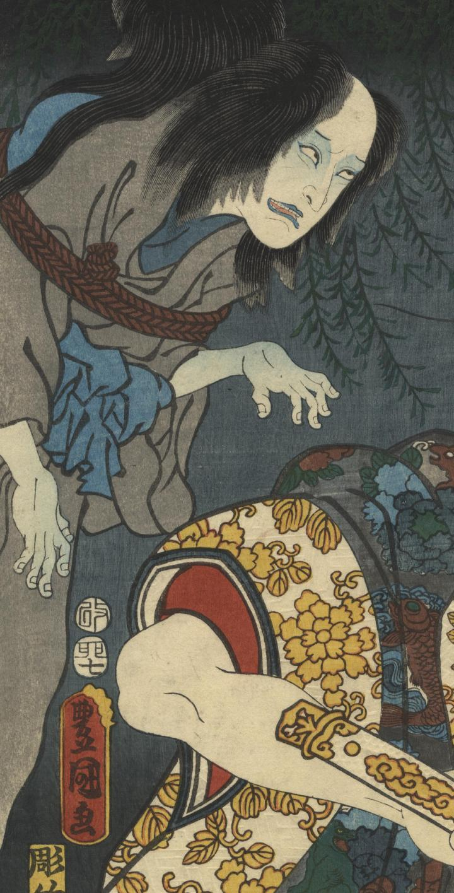

鎌田又八と菊野が縄でくくられた状態で亡霊となって現われている。
著作者：豊國／出典：親書誌：U426_nichibunken_0347：名高手毬諷実録；ナニタカシ テマリウタ ジツロク／日付：2014／資源識別子：U426_nichibunken_0347_0001_0000
Copyright (c)2010- International Research Center for Japanese Studies, Kyoto, Japan. All rights reserved.